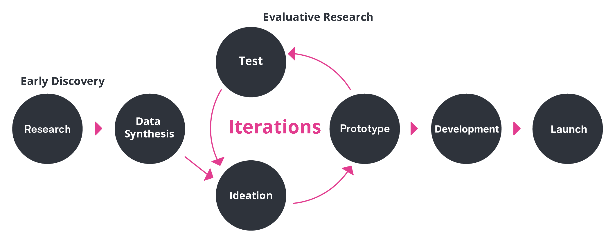

GovEx Case Study
The Center for Government Excellence, also known as GovEx at Johns Hopkins University had a dashboard called City Manager. The City Manager dashboard was used for the department's project management. GovEx Works is the dashboard version that I redesigned.
Project Summary
- My Role: UX Researcher, UX/UI Designer and Developer
- Employment: Johns Hopkins University(JHU)
- Research Type: Hybrid (remote and onsite), Both Generative and Evaluative Research
- Project Length: 8 months (2019-2020)
- Team: Backend Developer, Deputy Director
- Tools: Figma,Zoom, Django, Python, React.js
💣 The Problem
User Problem: JHU staff were not using the original City Manager dashboard for their project management needs because there were usability issues, bad information architecture, slow performance and several UI issues.
All of these combined problems hindered JHU staff from entering and trackng their data for city engagements. Digital software was vital to manage remote work during the pandemic.
Project Challenges and Constraints
What I faced when starting the project
- The department leadership was new to UX Research and at times resistant to the UX process due to a hectic delivery launch timeline.
- Constantly crammed for time and rushed. Certain UX design stages were rushed.
Research Approach
My Process
Research Methodology
- Contextual Inquiry
- User Interviews
- Usability Testing
- A/B Testing
UX Deliverables
- User Personas
- Sitemaps
- Hand-drawn Sketches and Wireframes
- Low Fidelity and High Fidelity Figma Prototypes
- Coded Prototypes for A/B Testing
Why Methods Were Selected
- Contextual inquiry was selected because I needed to directly observe the paintpoints and problems that JHU staff were facing when using the City Manager dashboard. This method also allowed me to see which sections of the dashboard they used the most.
- User interviews were selected to help me get a better understanding of each user's job role and specific dashboard needs.
Research Findings & Key Insights
🔎 Data Analysis and Synthesis Summary
The Dashboard Users
During early discovery research, I found out who the main dashboard users are and their problems. Below are the only dashboard users categorized by usage level and job title because not all of the JHU Dept staff used the dashboard.
Primary Users
Senior Advisors
- To guide and instruct city government departments on best practices for using data.
- Enters and tracks the progress of city engagements in the dashboard.
- Provide presentations and guides.
Monitor & Evaluation Officer
- Monitors the activity, status and progress of all staff using the dashboard. Think of them as the "dashboard police".
- Evaluates the quality of data for the entire department.
Secondary User
Instructional Team
- Provides instructional design expertise around a Data & Analytics curriculum in partnership with the Data Scientists and other practice managers.
Contextual Inquiry Sample
A Senior Advisor User Type shares their dashboard problems
- User can't fully see the UI when scrolling down preventing them from effectively using the drag-and-drop functionality.
- User has to ZOOM OUT in the web browser to fully see the page to use it! Horrible UX!
- He has resorted to using external spreadsheets to get the kind of sorting, filtering and other functionality he needs because the dashboard does not provide that.
Ideation
How might we craft a new experience that empowers JHU users to manage their data more efficiently?
{kind=link}
{kind=link}
Results and Impact
Finalizing the Project
Before
{kind=link}
After
{kind=link}
User Feedback
Alicia has been an integral lead in redesigning UI quality at the Centers for Civic Impact and successfully navigated this through a global pandemic, no less.
Her deep knowledge of her craft coupled with her ability to transform ideas has resulted in maximized usability, excellent user experience, and intuitive interfaces. She is an outstanding professional and will be a great asset to any organization lucky to have her.
Rudy de Leon Dinglas
GovEx Senior Advisor
Shout out to Alicia Alexander who was just walking me through some of the new GovEx Works!
Having come on and worked with the old version of the dashboard and then coming onto this new one, I'm really happy with how user-friendly and clear this is, and excited to be able to use it more!
Jacquie Greiff
Johns Hopkins University
Monitoring and Evaluation Associate
- I sent out a user feedback survey during the beta deployment for testing. I requested that users click through the dashboard for what was there so far and submit their feedback, questions and requests in their survey submissions.
- The early beta launch survey report showed that staff rated 4.7 out of 5 for my UX and UI dashboard redesign work! That's pretty close to 5 during the early stage! My next goal was to apply their needs and revisions to get it to 5 out of 5
{kind=link}
Impact
⭐ Product Impact: I improved the user experience and user interface of the GovEx Works dashboard for JHU staff. I was happy to make their workflow easier and productive!
⭐ Organization Impact: I introduced user research methods and the UX process to the organization.